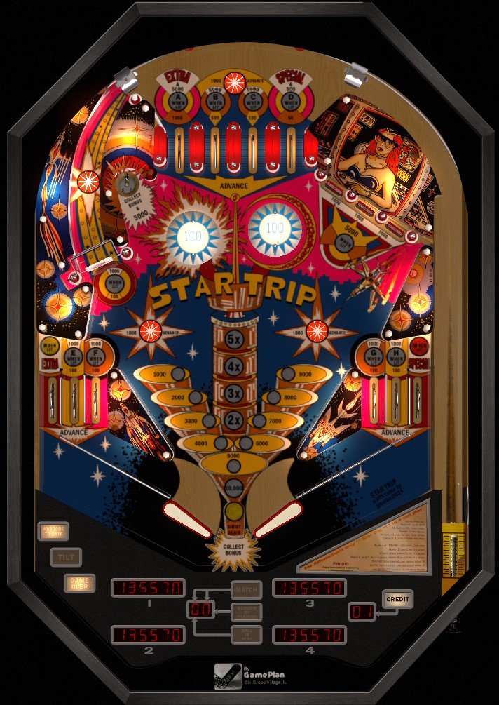

These are cocktail pinball games, designed to be played while sitting down. Keep this unconventional form factor in mind when considering the viability of established nudging or flipper skills.
Star Trip is not to be confused with the many pinball games based on the Star Trek or Star Wars media franchises.
Left spinner all day. The star rollover behind the spinner lights the spinner for 1,000 per spin. If base bonus and multiplier are high, shoot the saucer in the upper left to collect the bonus (which resets the base bonus, but not the multiplier). Bonus is built from rollover lanes and star rollovers. Bonus X is "sequential" like on Sinbad or Count-Down: 2x for B-C, then 3x for completing the drop targets, then 4x for E-F, then 5x for G-H.
The below picture is of Star Trip, which was taken from the VPX recreation by JPSalas.
A-B-C-D are the top lanes. E-F are the two left in lanes, G-H are the two right in lanes. Roll through any unlit lane to light it. No lane change is available on any lettered lanes. A scores 1,000 points, or 5,000 + lights the left out lane extra ball when lit. B scores 500 points or 5,000 when lit. C scores 100 points or 1,000 when lit. D scores 50 points or 500 when lit. E-F-G-H all score 100 points or 1,000 when lit. All A-B-C-D-E-F-G-H always award a bonus advance.
At the start of each ball, each target down scores 1,000 points. After the bank is completed once, each target down scores 5,000 points. Any completion of the bank scores 10,000 points and resets the bank.
The left spinner scores 100 points per spin, or 1,000 per spin when lit. The star rollover behind the spinner lights the spinner, meaning the spinner has its increased value for the rest of the ball starting with the second shot to the left orbit. The lit spinner is the highest source of repeatable points in this game.
Bonus is advanced by any rollover lane and any star rollover, with the lone exception being the star rollover behind the spinner. Bonus multiplier works as follows:
If you complete the drop targets once, then go back and light the B and C top lanes, you'll jump straight from 1x bonus to 3x, for example.
This setup means the B and C top lanes are extremely important, as no bonus multipliers can be earned unless B and C are both lit.
Max bonus is 5x 19,000 = 95,000 points. The left saucer is always available for a bonus collect; this mid-ball collect scores the entire bonus including multiplier, then resets the base bonus, but does not reset the multiplier. The saucer also scores a free 5,000 points in addition to the bonus collect, making it possible for the saucer to be a 100,000 point shot. The first bonus advance is never given for free; and it is possible to drain with 0 bonus; because of the way the top lanes are laid out, this can only happen if you drain the ball immediately after collecting the bonus at the saucer.
Star Trip has a conventional in/out lane setup, but with 2 in lanes on either side instead of 1. The left in lanes award E and F in the letter sequence, and the right in lanes award G and H; these lanes all score 100 points or 1,000 when lit, and rolling through an unlit lane lights it. Out lanes score 0 points. The left out lane can be lit for extra ball by making the A top lane twice in one ball. The right out lane can be lit for Special by making the D top lane twice in one ball. Special can only be worth free game or extra ball, never points.